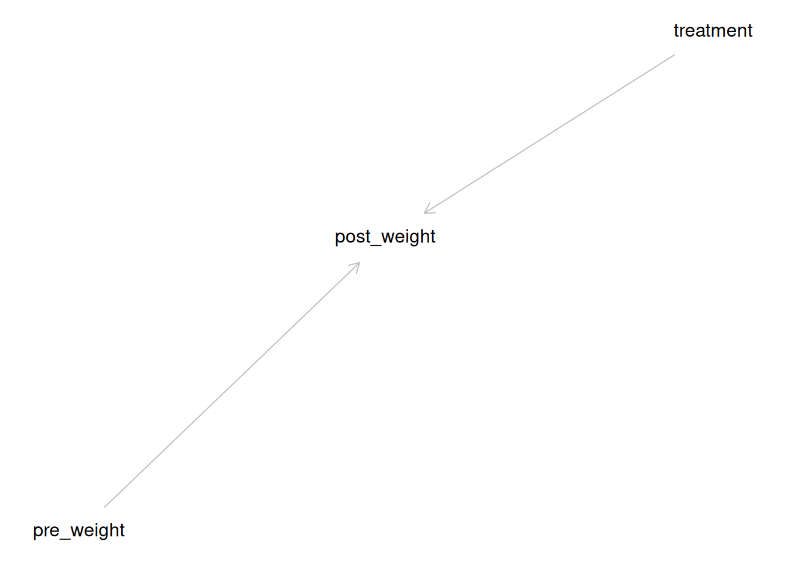

Estimating causal effects using a simplified R implementation
How {marginaleffects} can make your causal inferece scripts readable
R
marginaleffects
causal inference
ATE
Using marginaleffects, I show how to estimate ATE, ATT, ATU, and CATE in an RCT study
Author
Daniel S. Mazhari-Jensen
Published
November 20, 2025
Causal inference sounds cool - how easy is it to do?
I recently participated in a causal inference class and realized how difficult it is for some of my students and colleagues to actually compute causal inference estimates. Although the most important point is to understand when and why to use these methods, I also think accessibility to the computational part could be helpful for many.
Meme 1
Meme 2
In this short blog, I’ll introduce four key estimands that can be computed using a framework called G-computation:
the average treatment effect (ATE)
the average treatment effect on the treated (ATT)
the average treatment effect on the untreated (ATU)
the conditional average treatment effect (CATE)
The estimand
The Average Treatment Effect (ATE) measures how the treatment impacts outcomes across the entire study population. It addresses the question: Would it be beneficial to offer this program or treatment to everyone?
The Average Treatment Effect on the Treated (ATT) focuses on the effect of the treatment specifically for those participants who actually received it. It helps evaluate: Should the treatment be continued for the group currently receiving it?
The Average Treatment Effect on the Untreated (ATU) examines the effect of the treatment on those who did not receive it. This helps answer: Would it be advantageous to expand the program or treatment to individuals who were initially excluded?
The Conditional Average Treatment Effect (CATE) estimates how the treatment affects outcomes for a specific subgroup of the population, defined by certain characteristics (e.g., age, gender, or baseline risk). It answers the question: How does the treatment work for people with particular traits or conditions?
The assumptions
When estimating causal effects, such as the ATE or CATE, four fundamental assumptions must hold to ensure valid conclusions:
Exchangeability (or no unmeasured confounding) – This assumes that, after accounting for observed variables, the treated and untreated groups are comparable. In other words, there are no hidden factors that systematically affect both treatment assignment and the outcome.
Positivity (or overlap) – Every individual in the study population must have a nonzero chance of receiving each treatment option. Without this, it becomes impossible to estimate the effect for some groups because they never experience one of the treatments.
Non-interference (or the Stable Unit Treatment Value Assumption, SUTVA) – One person’s outcome should not be influenced by whether someone else receives the treatment. Each participant’s outcome depends only on their own treatment status.
Consistency – The treatment is well-defined, and each individual’s observed outcome under the treatment they actually received is the same as the outcome that would be observed under the same treatment condition in theory.
First, we fit a statistical model which controls for confounders. Then, we use the fitted model to “predict” or “impute” what would happen to an individual under alternative treatment scenarios. Finally, we compare counterfactual predictions to derive an estimate of the treatment effect (Hernán and Robins 2020).
To get an adjustment set for confounder control, we need to make a DAG
Plot coordinates for graph not supplied! Generating coordinates, see ?coordinates for how to set your own.
:::
::: {.cell-output-display}  ::: :::
Thus, we will be using the pre-weight as a confounding variable for the modeling.
Code
# model without adjustment setunadj_mod <-lm(post ~ treatment, data = dat)unadj_mod
Call:
lm(formula = post ~ treatment, data = dat)
Coefficients:
(Intercept) treatment2
108.53 33.84
Code
# model with adjustment setadj_mod <-lm(post ~ treatment * pre, data = dat)adj_mod
Call:
lm(formula = post ~ treatment * pre, data = dat)
Coefficients:
(Intercept) treatment2 pre treatment2:pre
14.835 283.241 2.256 -6.069
Note that this model does not correct for adherence. Therefore, it is the intention-to-treat effect. If we adjusted for adherence or in any other way try to correct for individuals deviating from the protocol, this would give the per-protocol effect.
Computing estimates | model, estimand
Now, we want to go from a “missing data”-problem, where only some individuals got the treatment while the others got no treatment, to a full matrix of all individuals got both treated and not. Of course, this is not what happened in real life. This is counter to the fact (i.e. counterfactual) estimates, which we can predict using normal regression coefficients. It looks something like this:
Code
# Show first 3 subjects with outcome and only being treated or not treater with missing values on the otherdat |># create subject id dplyr::mutate(ID = dplyr::row_number()) |># spread so each subject has columns for both treatments tidyr::pivot_wider(id_cols = ID,names_from = treatment,values_from = post,values_fill =NA ) |> dplyr::slice(c(1, 20, 35, 40)) # .preserve = group
# A tibble: 4 × 3
ID `1` `2`
<int> <dbl> <dbl>
1 1 106 NA
2 20 77 NA
3 35 NA 201
4 40 NA 154
Code
# Show subjects with outcome using marginaleffect imputationcounter_factuals <- marginaleffects::predictions( adj_mod,variables ="treatment")counter_factual_matrix <- counter_factuals |># ensure we have a subject index: tibble::as_tibble() |>#dplyr::mutate(Subject = dplyr::row_number()) |> dplyr::filter(rowidcf %in%c(1, 20, 35, 40)) |> dplyr::mutate(treatment = dplyr::if_else(rowid >40, 'Y_j^1', 'Y_j^0')) |> dplyr::select(treatment, rowidcf, estimate) |> tidyr::pivot_wider(id_cols =c(rowidcf),names_from = treatment,values_from = estimate )knitr::kable( counter_factual_matrix,caption ="Predicted weights for Subjects 1, 20, 35, and 40 under Treatment = 0 and 1")
Predicted weights for Subjects 1, 20, 35, and 40 under Treatment = 0 and 1
rowidcf
Y_j^0
Y_j^1
1
109.5950
137.9178
20
105.0826
145.5444
35
102.8264
149.3577
40
109.5950
137.9178
We are only interested in the average effect, as individual treatment effects are not possible to estimate.
Note that we gain some interesting information here. We see, as would be expected, that chicks with low pre-weight (susceptible to being underweight) will gain more weight, whereas chicks with initial high pre-weight (robust or previliged) will gain less weight.